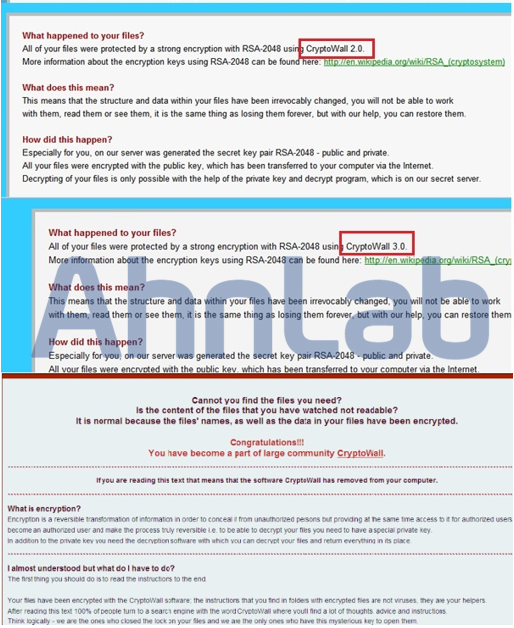
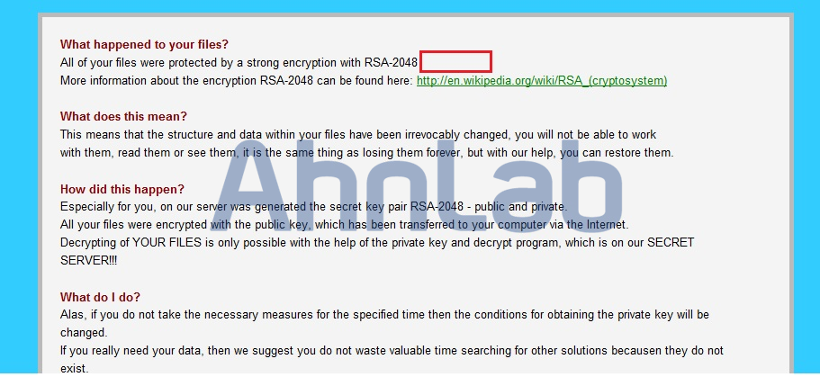
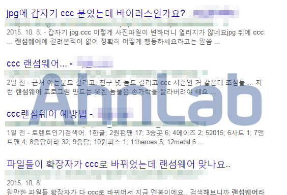
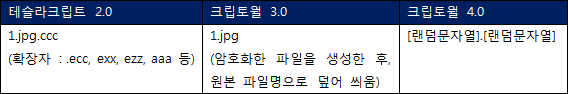
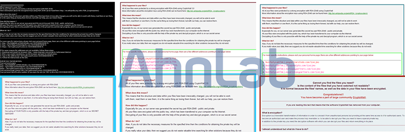
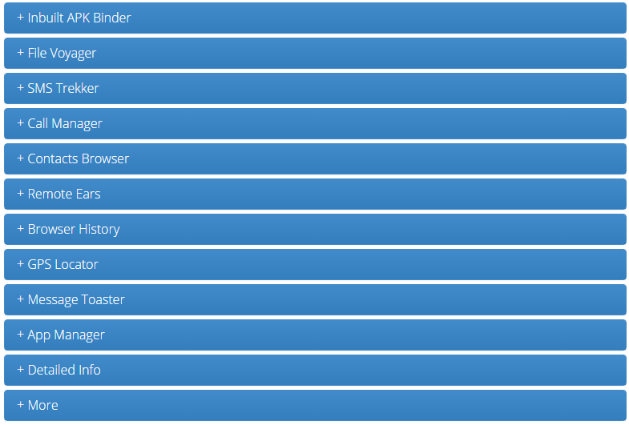
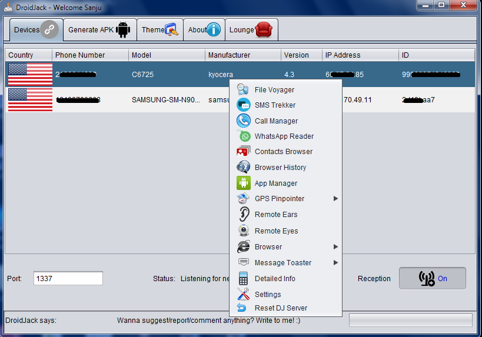
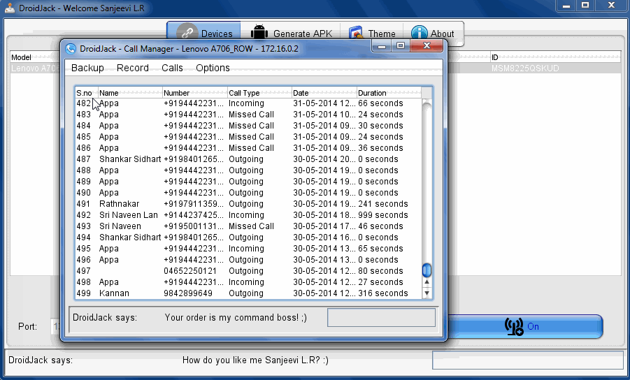
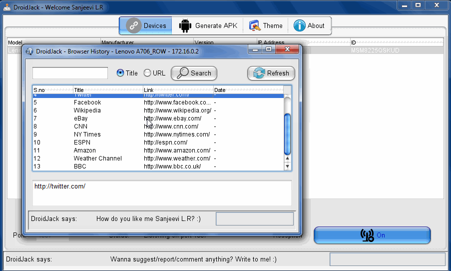
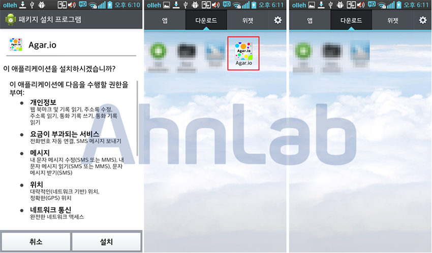

정보 스크랩
스크랩하기 버튼을 누르신 후 원하는 블로그에 붙여넣기(Ctrl+V) 하십시오. 본 기사는 저작권법의 보호를 받으며 기사의 원형을 변형하거나 훼손하는 것을 금지합니다.
■ 테슬라크립트와 크립토월 비교 분석
테슬라크립트(TeslaCrypt)와 크립토월(CryptoWall)은 11월 한 달 동안 국내에서 가장 많은 감염을 발생시킨 것으로 확인되는 랜섬웨어다. 크립토월은 2013년에 등장하여 꾸준히 업데이트되고 있는 랜섬웨어로, 지불을 유도하는 안내 메시지에 기재되어 있는 것과 같이 RSA Key로 파일을 암호화한다.

[그림 2-1] 크립토월 감염 후 사용자에게 노출하는 html 파일
(위에서부터 2014년 11월 / 2015년 1월 / 2015년 11월 확인)
이와 비교하여 테슬라크립트는 2015년 2~3월경 처음 등장했는데, 감염 후 사용자에게 노출하는 메시지에서 ‘RSA로 암호화한다’고 한 것과 달리 AES Key를 사용하여 파일을 암호화한다.
초창기 테슬라크립트의 경우, 크립토락커(CryptoLocker)의 감염 후 메시지를 차용하기도 했으며, 테슬라크립트 2.0 이후에는 크립토월의 감염 후 메시지(html 파일)를 그대로 사용하고 있는 것으로 확인된다. 이에 따라 사용자들은 테슬라크립트에 감염되었음에도 크립토월에 감염된 것으로 착각하는 경우가 많으며, 해외에서는 이를 테슬라크립트가 크립토월로 ‘위장(disguise)’하고 있다고 표현하기도 한다.

[그림 2-2] TeslaCrypt 2.0 복호화 및 결제 유도 안내 html 파일(크립토월 버전 문자열만 제거)
최근 확인되는 테슬라크립트는 파일을 암호화한 후 확장자를 ‘*.ccc’로 설정하는 것으로 확인되어, 국내에서는 CCC 랜섬웨어로 악명을 떨치고 있다.

[그림 2-3] ‘CCC 랜섬웨어’ 구글 검색 결과
복호화 안내 메시지로 인해 테슬라크립트를 크립토월의 변종이라고 인식하는 사용자들이 많은데, 크립토월과 테슬라크립트에 감염되었을 때 사용자가 구분할 수 있는 차이점은 다음과 같다.
1. 감염 후 암호화된 파일명


[그림 2-4] 테슬라크립트(왼쪽) / 크립토월 3.0(가운데) / 크립토월 4.0(오른쪽) 감염 후 파일명
2. 감염 후, 복호화 및 결제 안내 파일


[그림 2-5] 테슬라크립트(왼쪽) / 크립토월 3.0(가운데) / 크립토월 4.0(오른쪽) 이미지 파일 및 html 파일
3. 레지스트리 확인

 [그림 2-6] 크립토월 3.0 감염 후 레지스트리에 저장된 암호화 파일 목록
[그림 2-6] 크립토월 3.0 감염 후 레지스트리에 저장된 암호화 파일 목록
테슬라크립트와 크립토월 이외에도 매우 다양한 종류의 랜섬웨어가 있지만, 결과적으로 파일을 암호화하여 인질로 사용한다는 컨셉은 같다. 랜섬웨어에 감염될 경우 암호화를 수행하는 악성코드가 제거되더라도 이미 암호화된 파일로 인해 사용자들의 피해가 극심한데, 최근 나타난 랜섬웨어는 자기 자신의 감염 흔적을 지우기 위해 파일 암호화가 완료되면 자기 스스로를 삭제하는 경우가 많다. 따라서 랜섬웨어 감염 PC에서 실행된 랜섬웨어가 확인되지 않는 경우도 비일비재하다.
또한, 랜섬웨어가 등장한 초기에는 Windows의 VSC(Volumn Shadow Copy) 기능을 통해 암호화된 파일 중 일부 파일을 복구할 수 있었지만 최근 랜섬웨어는 VSC 기능을 이용한 백업 파일도 ‘vssadmin.exe delete’ 명령을 통해 삭제하여 복구가 어렵다. 이로 인해 백업의 중요성이 그 어느 때보다도 강조되고 있다.
한동안 랜섬웨어에 대한 국내 유포는 끊이지 않을 것으로 보이며, 관련 변종도 꾸준히 등장할 것이다. 국내 최대 이슈였던 파밍 악성코드가 사용자들에게 많이 알려지면서 악성코드에 감염되더라도 이전처럼 쉽게 모든 개인 정보를 입력하는 사용자는 많이 줄었기 때문에 악성코드 유포자들이 랜섬웨어에 눈을 돌렸을 것으로 추정된다.
따라서 확인되지 않은 메일의 첨부 파일은 바로 삭제하고, 다운로드 실행(Drive-by-Download) 방식으로 유포되는 악성코드 감염 예방을 위해 항상 최신 보안 패치와 사용 중인 백신을 최신 엔진 버전으로 유지해야 한다. 또한, 파일 공유 사이트 혹은 P2P를 통해 다운로드한 파일도 위험성이 있으므로 이러한 파일의 실행은 권장하지 않는다. 만약 불가피하게 실행해야 한다면, 반드시 사용 중인 백신으로 정밀 검사한 후 주의하여 실행할 수 있도록 하자.
V3 제품에서는 해당 악성코드를 다음과 같이 진단하고 있다.
<V3 제품군의 진단명>
Trojan/Win32.Teslacrypt (2015.11.07.02)
Trojan/Win32.CryptoWall (2015.11.11.00)
■ 안드로이드 RAT, 드로이드잭(DroidJack)
영국 경찰은 ‘드로이드잭(DroidJack)’ 으로 불리는 스마트폰 악성코드를 통해 28세의 남자를 체포했다. 영국 국가범죄수사국(UK's National Crime Agency)은 유럽의 5개국(독일, 프랑스, 벨기에, 스위스, 영국)과 미국에서 드로이드잭을 통해 범죄자를 검거한 것으로 확인됐다. 드로이드잭(DroidJack)은 원격 접속이 가능한 트로이목마 바이러스 혹은 ‘랫(RAT)'으로, 안드로이드 단말만 감염시킨다. 또한 사용자가 전혀 모르게 스마트폰 데이터의 트래픽을 감시하고 대화를 도청한다. 카메라에 찍힌 정보를 가로챌 수도 있다. 다음은 드로이드잭 검거 관련 BBC NEWS의 소식이다.

[그림 2-7] BBC NEWS 2015.10.30 (드로이드잭 관련 검거 소식)
드로이드잭은 다음과 같은 기능을 제공하며 가격은 $210이다. 온라인 구매 시 [그림 2-8]과 같이 사용자 정보를 요구한다.
[주요 기능]
- apk 파일 빌더
- 스마트폰에 저장된 파일 탈취
- 스마트폰으로 파일 전송
- 스마트폰의 SMS 탈취
- 스마트폰에서 SMS 보내기
- 통화내역 탈취
- 주소록 탈취
- 스마트폰의 마이크를 이용하여 도청 및 녹음
- 스마트폰 인터넷 방문 기록 및 북마크 정보 탈취
- 위치 정보 탈취
- 스마트폰의 앱 실행, 실행 중인 앱 정보 탈취
- IMEI, MAC, 통신사 정보 탈취 및 루팅 여부 확인 등


[그림 2-8] 드로이드잭 v2.6 기능 및 가격
드로이드잭을 이용하여 APK 빌드를 할 수 있으며, 감염된 사용자에게서 정보를 탈취하고 모니터링할 수 있다. 모니터링 화면 구성은 [그림 2-9]와 같으며, 다양한 기능을 제어할 수 있는 것을 확인할 수 있다.

[그림 2-9] 드로이드잭 v2.6 빌더 및 모니터링 콘솔
대표적인 기능 중 통화 내역 기록, 위치 추적, SMS 내역, 브라우저 방문 정보 등을 가로채는 기능을 살펴보면 다음과 같다.

[그림 2-10] 통화 내역 확인 기능

[그림 2-11] GPS 위치 정보 확인 기능

[그림 2-12] SMS 확인 기능

[그림 2-13] 브라우저 방문 기록 확인 기능
안드로이드 악성 앱은 주로 구글(Google)이나 유틸리티, 유명 게임 등의 아이콘을 이용하여 제작되는 경우가 많은데 이는 사용자가 의심하지 않고 설치하도록 유도하기 위해서다. 안랩에서는 드로이드잭과 관련된 수많은 악성 앱을 진단하고 있다. 그 중 아이콘 몇 가지를 살펴보면 [그림 2-14]와 같다. 일부는 테스트를 위해 제작한 앱도 포함되어 있었다.

[그림 2-14] 드로이드잭 악성 앱
유명 게임인 ‘Agar.io’의 아이콘으로 위장한 악성 앱을 설치한 화면을 살펴보면 [그림 2-15]와 같다. 설치 과정에서 필요한 권한을 획득한다. 설치 완료 후 실행되면 자신의 아이콘을 제거하여 사용자 스마트폰에 설치되어 있지 않은 것처럼 위장하고 있다.

[그림 2-15] 권한 획득(왼쪽) / 설치 아이콘(가운데) / 설치 및 실행 후 아이콘이 사라진 화면(오른쪽)
이러한 스파이 앱은 각종 악성 앱의 악의적인 기능의 총 집합체로 스마트폰에 저장된 거의 모든 정보를 조작하거나 탈취할 수 있기 때문에 특히 주의해야 한다. 따라서 앱은 공식 마켓에서 다운로드하여 설치하는 것이 상대적으로 안전하지만, 공식 마켓에도 악성 앱이 등록되어 있을 수 있으므로 평판 정보를 확인하고 설치하는 습관을 가져야 한다. 무심코 문자에 포함된 URL을 클릭하다 보면 악성 앱이 설치될 수도 있기 때문에 안전성이 확인되지 않은 URL이나 앱은 설치하지 않도록 주의해야 한다. 또한, 세계 1위의 모바일 전용 보안 앱(V3 모바일 등)이나 스미싱 탐지 앱(안랩 안전한 문자 등)을 설치하고, 자동 업데이트 설정으로 항상 최신 엔진을 유지하여 보다 안전한 스마트폰 환경을 만들어야 한다.
V3 제품에서는 해당 악성코드를 다음과 같이 진단하고 있다.
<V3 제품군의 진단명>
Android-Trojan/Sandrorat
이 정보에 대한 저작권은 AhnLab에 있으며 무단 사용 및 도용을 금합니다.
단, 개인이 비상업적인 목적으로 일부 내용을 사용하는 것은 허용하고 있으나, 이 경우
반드시 출처가 AhnLab임을 밝혀야 합니다. 기업이 이 정보를 사용할 때에는 반드시
AhnLab 의 허가를 받아야 하며, 허가 없이 정보를 이용할 경우 저작권 침해로 간주되어
법적인 제재를 받을 수 있습니다. 자세한 내용은 컨텐츠 이용약관을 참고하시기 바랍니다.
정보 이용 문의 : contents@ahnlab.com